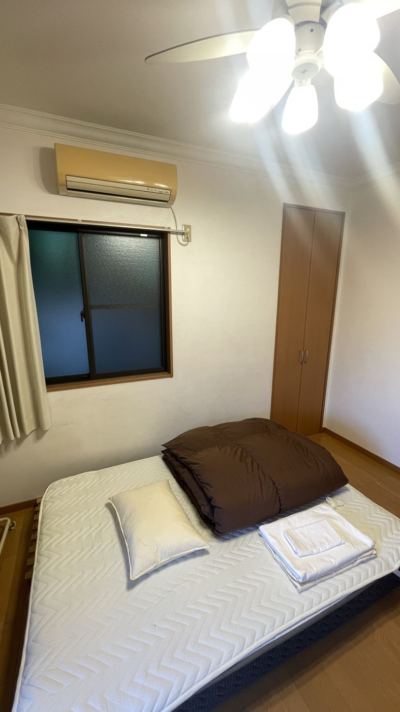
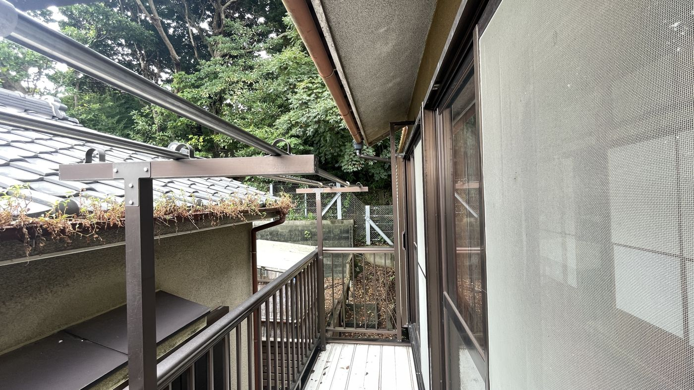

MIURA · STAY GUIDE
設備とWi-Fi
部屋、キッチン、冷暖房、Wi-Fiのことです。
試作版：「記入待ち」と「仮」の札がある所は、家守に確かめてから直します。
Wi-Fi
- Wi-Fiの名前とパスワードは、予約の前日にお送りするメールに書いてあります。
- つながらないときは、オープンチャットで聞いてください。
- オンライン会議や長い電話は、1階の和室でお願いします。201号室は、襖1枚の仕切りなので、長い通話は控えてください。
お部屋


| 部屋 | ベッド・寝具 | そのほか |
|---|---|---|
| 101（洋室） | ダブルベッド | デスク・チェアあり |
| 201（和室） | 和布団 2組 | 座卓・座布団。襖で仕切られているので、隣の音が伝わりやすい |
| 203（洋室） | ダブルベッド | デスク・チェアあり |
どの部屋にも、内鍵があります。貴重品は、ご自分で管理してください。
出典：ADDress公式ページ（三浦A邸）。
シーツ・枕カバーなどのリネンは、和室の共有スペースの、棚・ラックにあります。1人1セットを使ってください。枚数は足りていますが、置き場所が分かりにくいので、最初に確かめてください。リネンは、棚・ラックの上の段です。追加の寝具は、202号室の押し入れに布団があります。202号室に人が泊まっているときは、入れないので、家守に問い合わせてください。延長コードは、共用和室の棚にあります。
キッチン

- 調理器具、食器、洗剤、スポンジ、布巾は、すべてキッチンの中にあります。
- 漆喰のかまどは、使ってかまいません。使い方は、下の「漆喰のかまど」に書いてあります。
- 調味料は、使ってかまいません。使ったら、ドネーションボックスに、お気持ちを入れてください。調味料は台所の左側に、ボックスはキッチンの机の上にあります。（洗濯機・乾燥機の料金は、別の箱です。洗濯のページを見てください）
- 共用部のものを、個室へ持ち込まないでください。
- 冷蔵庫は、みんなで譲り合って使ってください。部屋ごとの置き場は、冷蔵庫のタグで分かります。宿泊の状況に合わせて、タグは入れ替えてかまいません。食材は、自己責任で管理してください。 出発するときは、食材を持ち帰るか、処分してください。冷蔵庫の中の「共有棚」に、日付を書いて置いていくこともできます。
漆喰のかまど
記入待ち：漆喰のかまどの使い方（キッチンの黒板の下にある説明書の内容）
冷暖房
- 夏は、湿気がたまるので、キッチンの扇風機と、共用和室のエアコンを、つけっぱなしにしています。
- 冬の暖房は、エアコンです。持ち込みの暖房器具は、使えません。
- 冬は、廊下や共用のキッチンが冷えます。室内履きや、上着があると安心です。
洗濯

洗濯機は1回100円、洗濯物は2階の干場で干せます。くわしくは、次のページです。